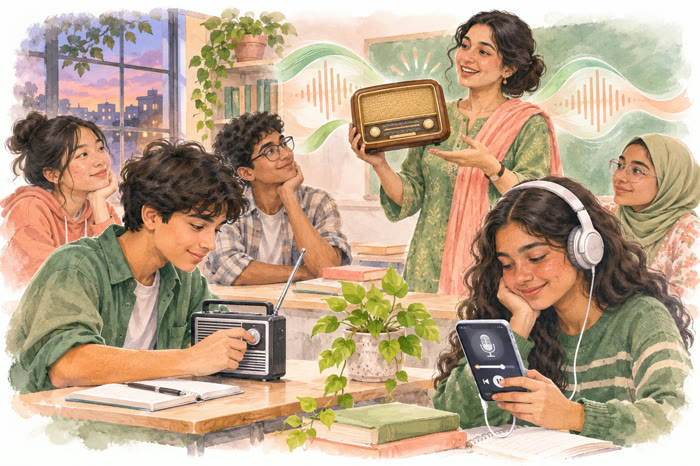

Listen to the text
Speed:

"Radio is for grandparents and taxi drivers," said Lukian at the Media Studies lesson. "Nobody under forty listens to it." Our teacher, Mr Stepan, didn't argue. He only said, "Let's check. Your task for this week is to listen to one radio programme and to watch one vlog on the same topic. Then compare them and write a review." I chose the topic of space. On Tuesday evening I found a science programme called "Above Us" on a national radio station. I lay on my bed, closed my eyes and listened. The host was talking to an astronomer about the planets. There were no pictures, of course, but something strange happened. When the guest described the rings of Saturn, I saw them in my head. They were made of ice and dust, she said, and some pieces were as small as sand, and others as big as a house. The host asked simple questions, the kind I would ask myself. Nobody shouted, nobody hurried. Forty minutes passed, and I didn't touch my phone once. On Wednesday I watched a popular vlog about the same planets. It was bright and fast. There were animations, jokes and loud music. Every ten seconds the picture changed. The vlogger was funny, and I learnt three new facts. But two days later I couldn't remember them. I remembered only that he had asked viewers to subscribe four times. In my review I wrote: "The vlog gave me pictures. The radio let me make my own. The vlog was like fast food: tasty and quickly forgotten. The radio programme was like a home dinner. All in all, I would recommend both, but for different moods." Other students found their own favourites. Viktoriia discovered a morning show where listeners call and tell funny stories. Ivan found a programme of radio plays, detective stories with voices, steps and creaking doors. "It is a film for your ears," he said. And Lukian? He came on Friday looking a little confused. "I listened to a football match on the radio," he said. "The commentator was so good that I saw every pass. Then I watched the same match on video. The radio version was better." Mr Stepan smiled. "Radio is a hundred years old," he said. "It has been buried many times. It always comes back."
Tap any sentence to hear it again.
Сподобалось? На сайті ще більше матеріалів для вчителів!
Reader, презентації, ігри, діагностичні та контрольні роботи до підручників 1-11 класів.
Перейти на сайт materials.allaenglish.com